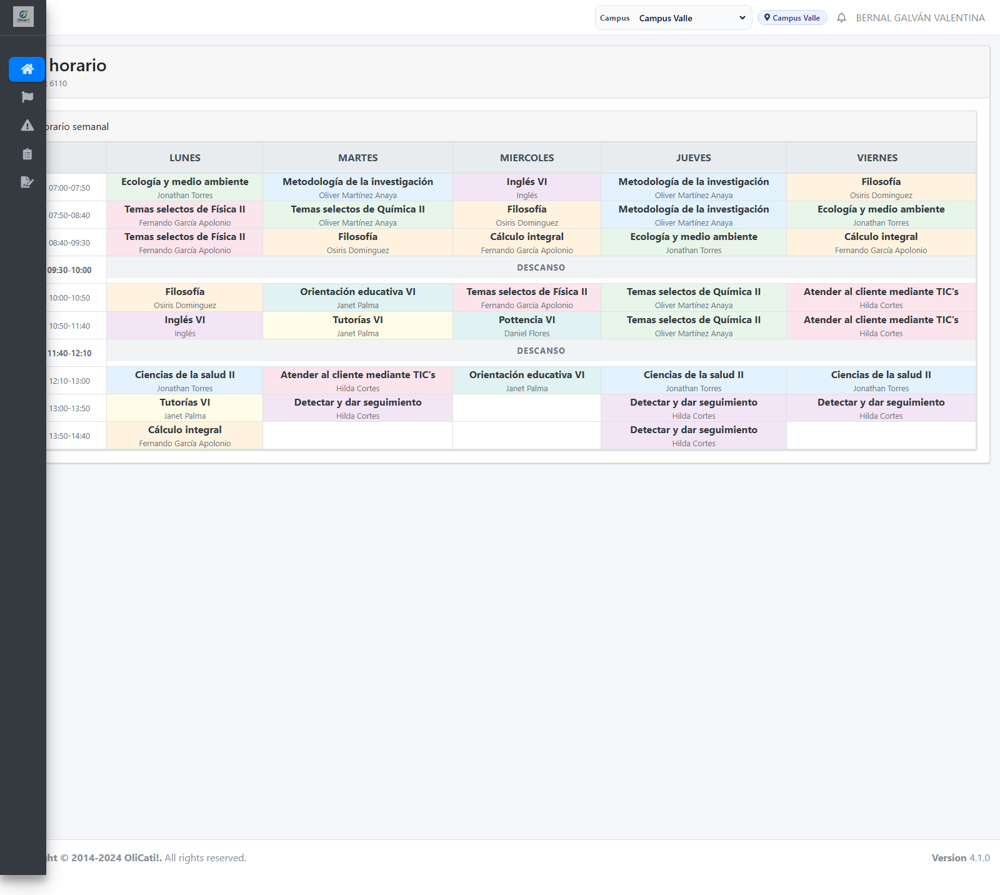
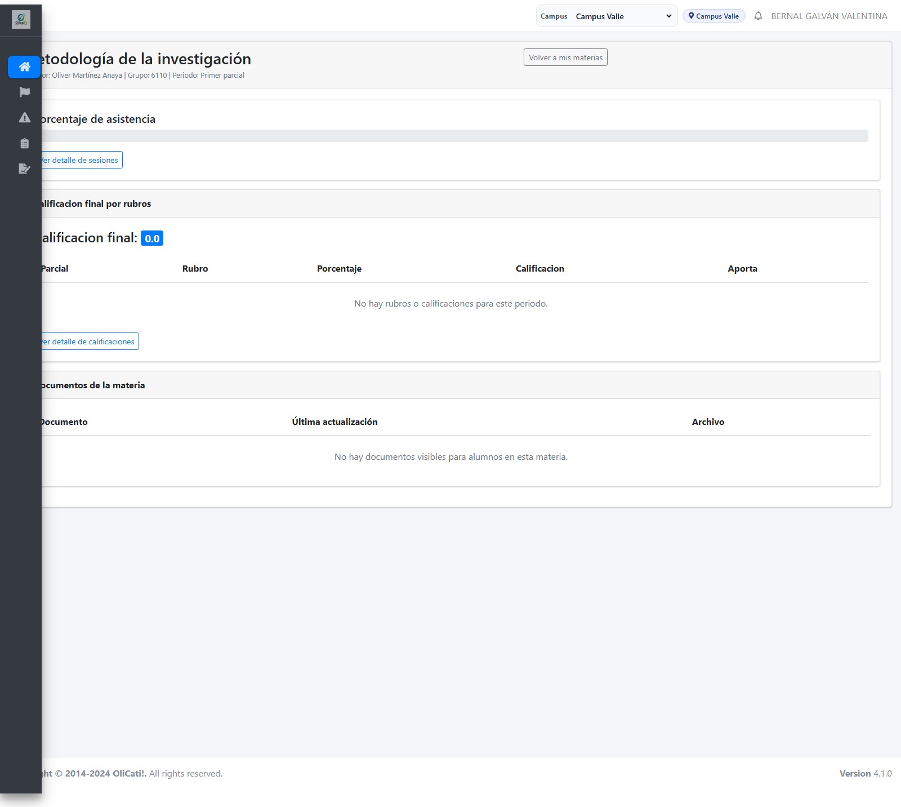
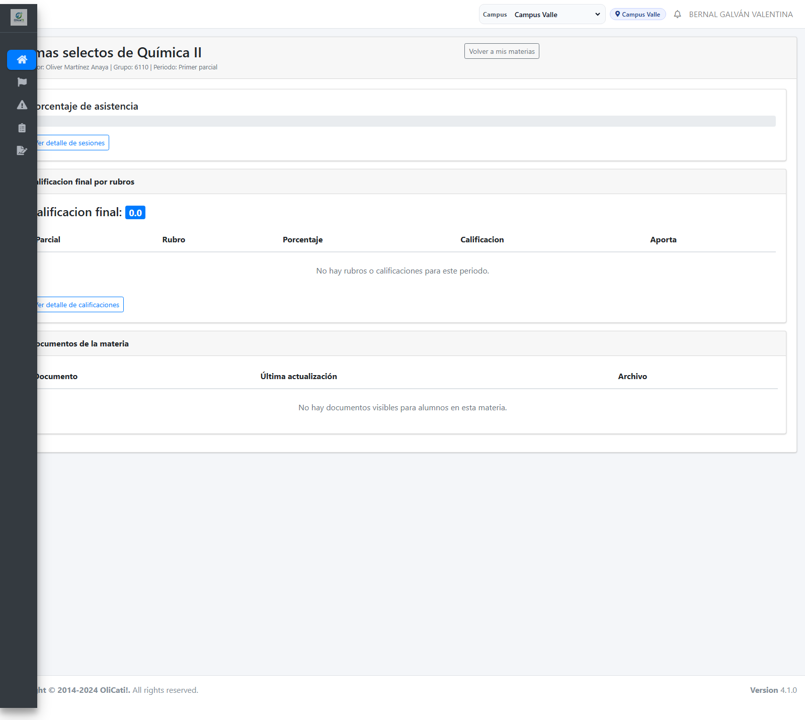
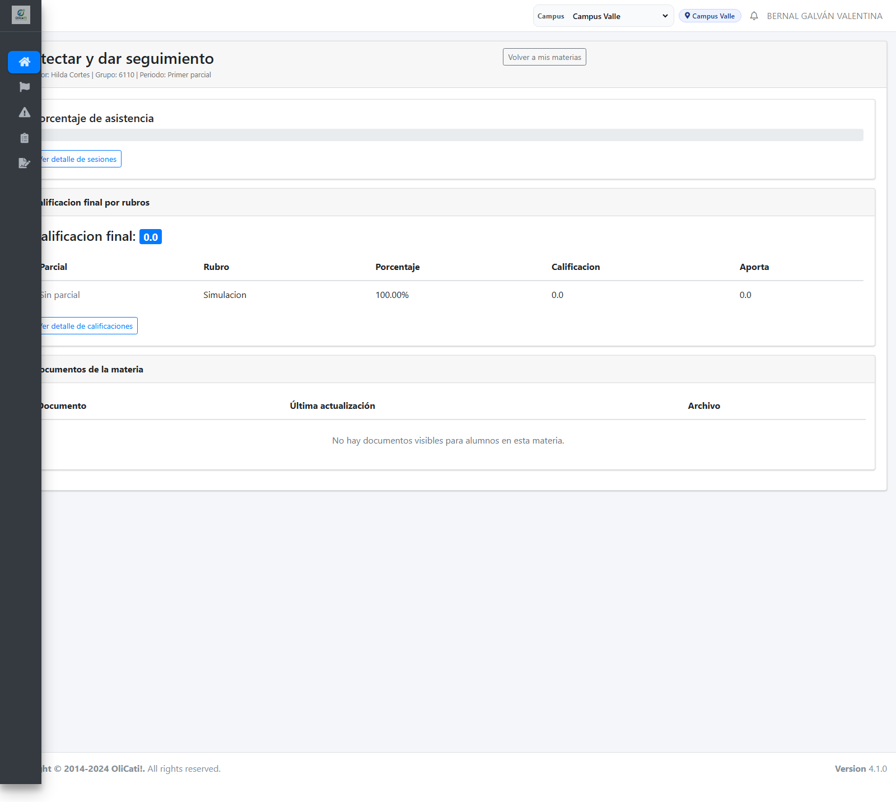
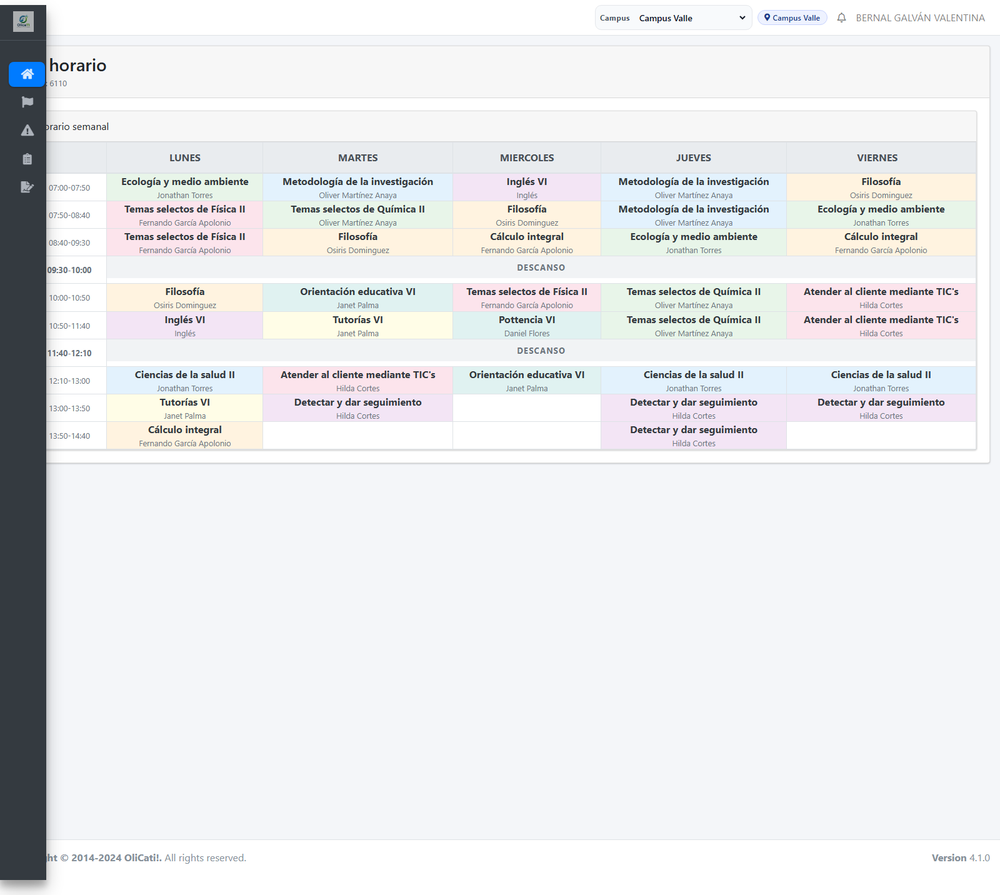

Materias
Evidencias de navegaci?n y acciones principales para este m?dulo.

Pantalla principal subjects
http://127.0.0.1:8000/student/subjects
Acci?n: Ver dashboard
http://127.0.0.1:8000/student/subjects
Acci?n: Metodología de la investigación Oliver Martínez Anaya
http://127.0.0.1:8000/student/subjects/371
Acci?n: Temas selectos de Química II Oliver Martínez Anaya
http://127.0.0.1:8000/student/subjects/372
Acci?n: Detectar y dar seguimiento Hilda Cortes
http://127.0.0.1:8000/student/subjects/375
Acci?n: Ver dashboard
http://127.0.0.1:8000/student/subjects
Acci?n: Ver dashboard
http://127.0.0.1:8000/student/subjectsAcci?n: Ver dashboard
http://127.0.0.1:8000/student/subjectsAcci?n: Ver dashboard
http://127.0.0.1:8000/student/subjects